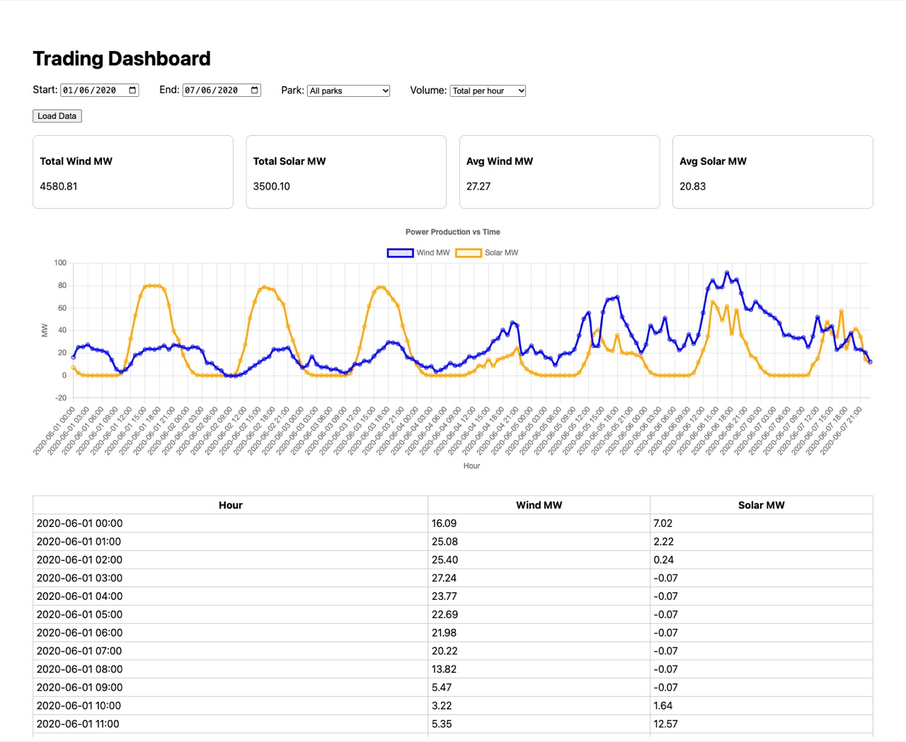
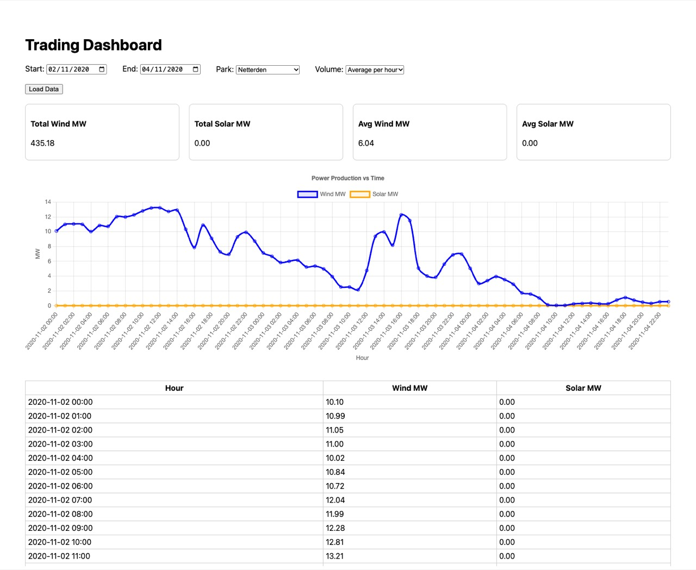
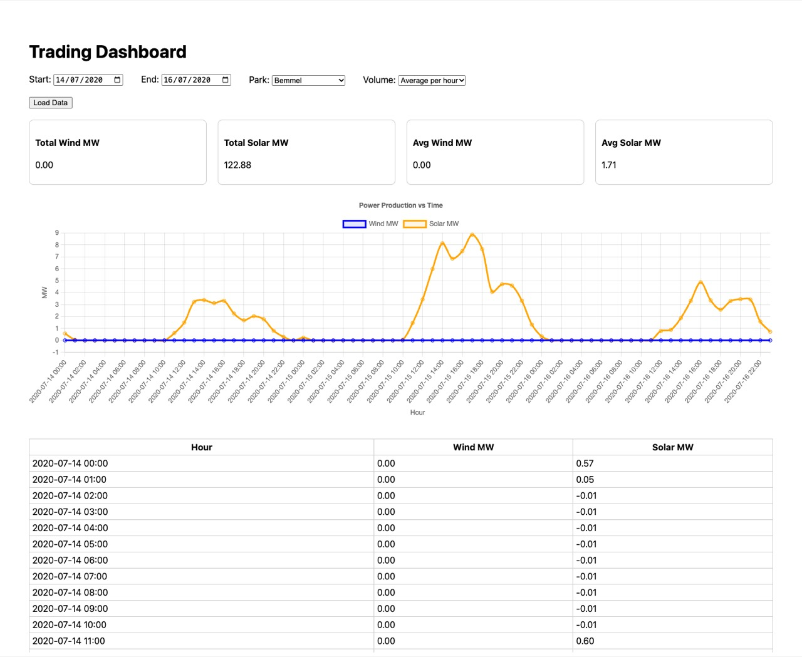
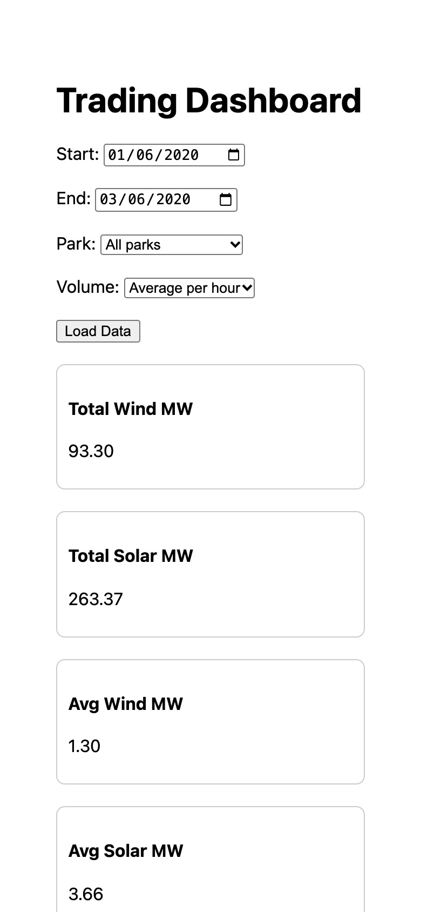
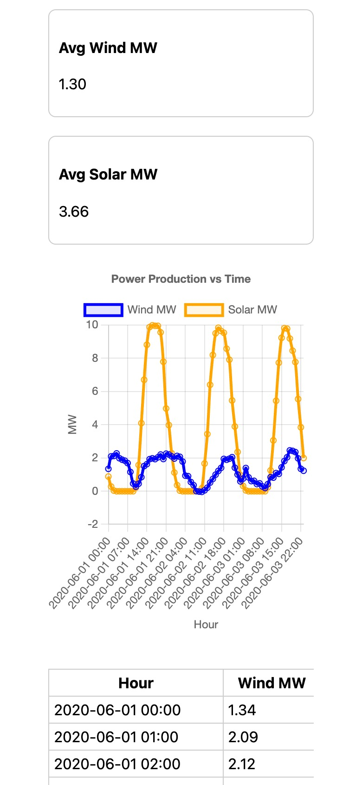

Wind Solar
A trading dashboard for wind and solar production.
I built a dashboard where energy traders pick a date range and a park, and see the production per hour in a chart and a table. The data comes from five parks, measured every fifteen minutes.

What it does
The page has four controls: a start date, an end date, a park and a volume type. Press Load Data and you get four summary cards, a line chart and a table with one row per hour.
The API reads the raw fifteen-minute readings, keeps only the chosen park and dates, and groups them by hour. It can give the average per hour or the total per hour, split into wind and solar.
- 5 parks: three wind, two solar
- 15 minutes between two readings
- 177k readings in the sample data


On a phone
The controls and the cards wrap into one column. The chart keeps its height, and the table scrolls sideways when it does not fit.


How one hour is made
Each hour in the chart comes from four readings. Pick a park to see real readings from the sample data, and what the two volume types make of them.
Average per hour
Total per hour
Decisions I made
- One data source, two places to read from
- The service talks to a small interface. On my laptop it reads the CSV files, in AWS it reads DynamoDB. One environment variable picks which one, so you can run the whole thing locally without a cloud account.
- Keep the raw readings, group them on request
- The fifteen-minute readings are stored as they are. The grouping by hour happens when the trader asks, so the same data can give an average or a total without a second copy.
- Each park has its own time zone
- A small park list says the energy type and time zone of each park. The sync job saves the time in UTC, and the reader turns it back into the park's local time.
- Keys that fit a date range
- In DynamoDB the key is the park plus the time of the reading. A date range for one park is one query, with paging, and not a scan of the whole table.
- Small Lambdas with small rights
- The API function can only read the table. A second function runs every hour, copies the newest readings in, and can only write. The API sits behind IAM, all described in one SAM template.
- Honest about what it is
- This was a coding challenge, not a live product. I kept the values as they come, also the small negative ones at night, and the aggregation code has its own tests with a fake data source.
Built with Python 3.11, FastAPI and pytest; AWS Lambda, DynamoDB, S3 and SAM; Next.js, React, TypeScript and Chart.js.
Want something like this?
A dashboard for your own time series: production, prices, sensors or sales. Send me a short note about your data and who needs to read it, and we talk.